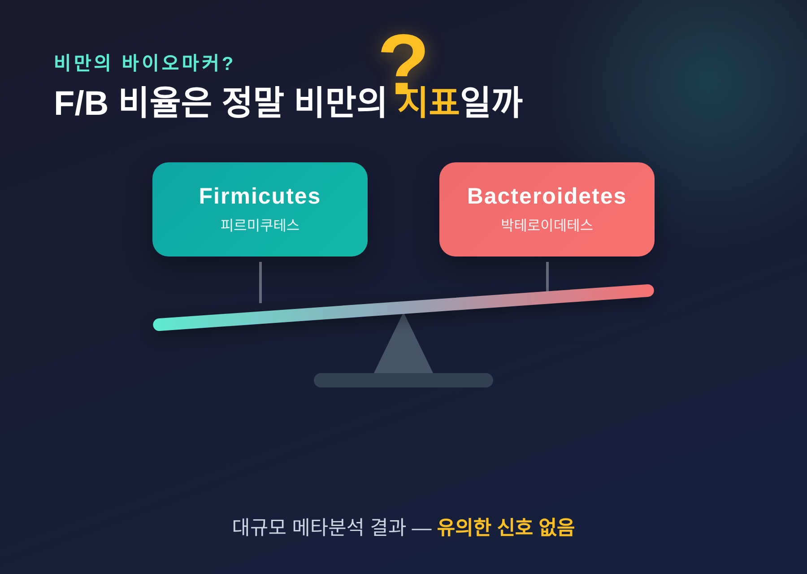
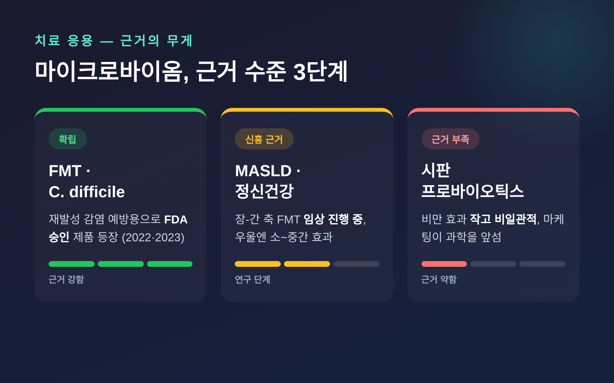

마이크로바이옴과 비만·면역, 어디까지가 사실일까
오늘은 마이크로바이옴을 두고 그동안 정리해 둔 내용을 나눠보려 합니다. 비만과 면역의 새로운 열쇠라는 말이 자주 들리지만, 어디까지가 확립된 사실이고 어디부터가 기대 섞인 과장인지 구분이 쉽지 않습니다. 그 경계를 차분히 짚어보겠습니다.
먼저 세 줄로 요약하면 이렇습니다.
- 장내 미생물이 비만·면역·대사와 연관된다는 관찰은 넓게 쌓였습니다. 다만 상당수는 상관관계입니다.
- 근거가 가장 탄탄한 곳은 작동 기전, 특히 단쇄지방산을 통한 면역 조절입니다.
- 비만·우울에 대한 시판 프로바이오틱스 효과는 "작고 일관되지 않음" 수준이며, 마케팅이 과학을 앞지르는 경우가 많습니다.
마이크로바이옴이란 무엇인가
마이크로바이옴은 우리 몸, 특히 장 속에 사는 미생물 전체와 그 유전 정보를 가리킵니다. 이들은 식이섬유를 발효시켜 우리가 추가 에너지를 흡수하도록 돕고, 지방 저장에도 관여하는 것으로 제시됩니다. 아세트산·프로피온산·부티르산 같은 단쇄지방산(SCFA)을 만들어 에너지 균형과 인슐린 감수성을 조절하기도 합니다.
담즙산 신호, 분지사슬아미노산, 트립토판 대사산물처럼 미생물이 만든 물질들이 대사와 염증, 그리고 장과 뇌의 소통을 조율하는 핵심 조절자로 지목됩니다.
다만 한 가지는 짚어두어야 합니다. 이 경로들은 가설로 잘 정리되어 있으나, 사람에게서 각각이 비만에 얼마나 기여하는지 그 정량적 크기는 아직 확립되지 않았습니다.
비만 — F/B 비율이라는 오래된 오해

한때 "비만한 사람은 피르미쿠테스/박테로이데테스(F/B) 비율이 높다"는 설명이 널리 인용되었습니다. 비만의 바이오마커 후보로 여겨졌던 것이죠.
예전엔 그 비율이 비만의 표지처럼 다뤄졌습니다. 지금은 다릅니다. 대규모 메타분석에서는 F/B 비율로 비만과 정상체중을 가를 유의한 신호가 발견되지 않았습니다. 2024년 크로아티아 추적관찰 연구에서도 비율과 과체중 사이의 연관성은 나타나지 않았습니다.
그러니 F/B 비율을 비만의 확실한 지표로 단정하는 서술은, 현재로서는 과학적 뒷받침이 약하다고 보는 편이 정직합니다.
그래도 한 균주는 꾸준한 관심을 받습니다. 아커만시아 무시니필라(Akkermansia muciniphila)입니다. 관찰연구에서 이 균이 적을수록 비만·2형 당뇨·대사증후군이 많은 역상관을 보였습니다. 2019년 첫 인체 파일럿 시험에서는 저온살균한 아커만시아가 안전했고, 위약 대비 인슐린 감수성과 총콜레스테롤을 개선했습니다.
다만 이는 40명을 등록한 소규모 탐색 연구입니다. 확정적 효능의 증거로 받아들이기에는 이릅니다. 게다가 2025년 연구는 흥미로운 단서를 더했습니다 — 원래 이 균이 적었던 사람은 개선을 보였지만, 이미 충분히 정착된 사람은 사실상 반응이 없었습니다.
면역 — 기전이 가장 단단한 영역
세 영역 중 근거가 가장 탄탄한 곳은 면역입니다.
단쇄지방산은 식이섬유 같은 프리바이오틱스가 미생물에 발효되며 생기고, 대장 안에서 가장 풍부한 미생물 대사산물입니다. 이 물질은 면역세포인 T림프구에 직접 작용해 그 상태를 재프로그래밍합니다. 특히 조절 T세포(Treg)의 분화와 항염증 사이토카인 IL-10 생성을 촉진합니다.
기전도 한 갈래가 아닙니다. 히스톤 탈아세틸화효소 억제, G단백질연결수용체 신호, 대사 통합 등 여러 경로를 통해 면역 반응과 면역 관용을 둘 다 조율합니다.
여기서 오해를 하나 풀고 싶습니다. 흔히 말하는 "면역력을 키운다"는 단순한 그림과는 결이 다릅니다. 핵심은 힘을 키우는 것이 아니라, 과하지도 모자라지도 않게 균형과 항상성을 유지하는 정교한 조절입니다.
치료 응용 — 어디까지 왔나

가장 확립에 근접한 응용은 분변미생물이식(FMT)입니다. 재발성 클로스트리디오이데스 디피실 감염 예방용으로 2022년과 2023년에 FDA 승인 제품이 나왔습니다. 다만 승인된 적응증은 이 감염에 한정됩니다. 비만이나 대사질환을 위한 승인이 아니라는 점은 분명히 해두어야 합니다.
대사질환 쪽은 아직 신흥 근거 단계입니다. 대사관련 지방간질환(MASLD)에서 장-간 축을 겨냥한 FMT가 연구되고 있고, 2025년 9월까지 관련 임상시험 8건이 진행 중입니다.
정신 건강은 어떨까요. 프로바이오틱스가 위약 대비 우울 증상을 소~중간 정도 줄였다는 메타분석이 있습니다. 건강한 사람보다 임상적 우울 환자에서 효과가 더 컸다는 보고도 나옵니다. 그러나 효과는 대체로 modest하고 연구 간 편차가 큽니다.
아쉬운 점도 솔직히 말씀드립니다. 시판 프로바이오틱스·프리바이오틱스는 규제가 느슨한 편이고, 다수 제품이 라벨에 적힌 균수조차 채우지 못한다는 지적이 있습니다.
과장과 사실을 가르는 선
마이크로바이옴 연구가 만성 질환에 즉효를 주리라는 기대는 과대평가된 면이 있습니다. 미디어는 연구를 "획기적", "기적적"으로 포장하지만, 강력한 근거는 여전히 제한적입니다.
문제의 뿌리는 재현성입니다. 통계적으로 유의한 미생물 변화는 자주 보고되어도, 임상적으로 의미 있게 재현되는 결과로 이어지는 경우는 상대적으로 적습니다. 더구나 무엇이 "건강한 마이크로바이옴"인지 합의된 정의조차 아직 없습니다. 정답이 하나가 아닐 수도 있습니다.
정리하면 이렇습니다. 마이크로바이옴은 비만과 면역을 잇는 흥미로운 통로이지만, 그 문이 활짝 열렸다고 보긴 이릅니다. 기전은 단단하고, 임상은 영역마다 근거의 무게가 다릅니다.
"확립된 사실과 기대를 섞지 않는 것 — 지금 이 분야를 읽는 가장 정직한 태도입니다."
마이크로바이옴이 건강의 새로운 열쇠가 맞느냐고 물으신다면, 저는 이렇게 답하겠습니다. 열쇠일 가능성은 충분하나, 자물쇠의 구조는 아직 그려지는 중이라고요.